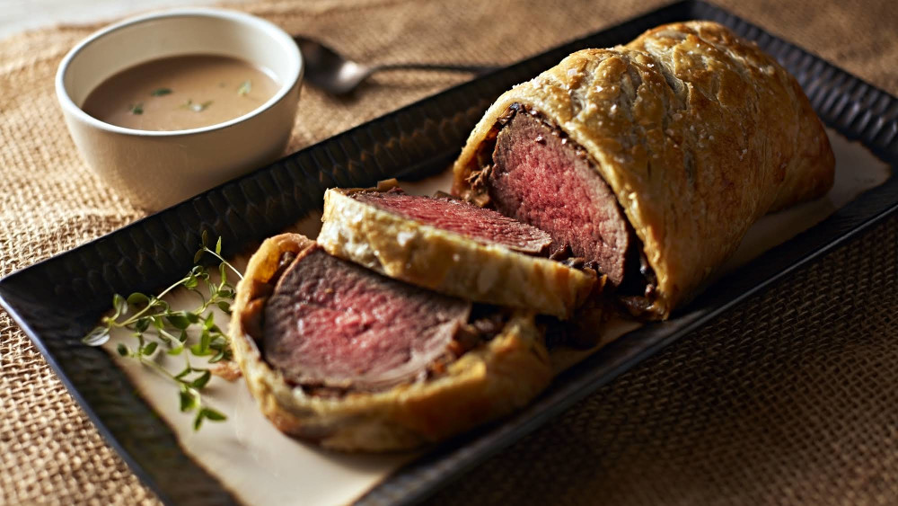

Beef Wellington

A Beef Wellington is a traditional British dish made of fillet of beef and pastry. In this recipe we will be recreating this
famous dish.
Ingredients
- A ground beef fillet
- 3 tbsp olive oil
- 250g mushrooms
- 50g butter
- 100ml dry white wine
- 12 slices prosciutto
- 500g puff pastry
- a little flour
- 2 egg yolks
Method
- Heat oven to 220C/fan 200C/gas 7.
- Sit the 1kg beef fillet on a roasting tray, brush with 1 tbsp olive oil and season with pepper, then roast for 15 mins for medium-rare or 20 mins for medium. When the beef is cooked to your liking, remove from the oven to cool, then chill in the fridge for about 20 mins.
- Chop the mushrooms
- cook the mushrooms with olive oil in the pan